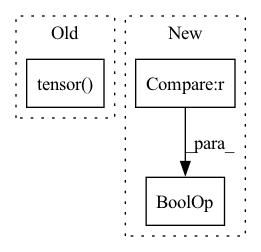

Pattern ID :21461
Before Change
for item in bboxes:
target = {
"boxes": item[0].to(dtype=torch.float, device=device),
"labels": torch.tensor( item[1]) .to(device=device)
}
targets.append(target)
After Change
param_dicts = [
{"params": [p for n, p in model.named_parameters() if "backbone" not in n and p.requires_grad]},
{
"params": [p for n, p in model.named_parameters() if "backbone" in n and p.requires_grad ],
"lr": float(config["training"]["lr_backbone"])
},
]In pattern: SUPERPATTERN
Frequency: 3
Non-data size: 3
Instances Fragment ID: 68789881
Project Name: bwittmann/transoar
Commit Name: fbe1515fe14ebf81c18bcf86c27bd7cb4ac79e7e
Time: 2021-11-22
Author: bastian.wittmann@tum.de
File Name: scripts/train.py
M Class Name: AnonimousClass
N Class Name: AnonimousClass
M Method Name: train(1)
N Method Name: train(1)
M Parent Class:
N Parent Class:
M File Name: scripts/train.py
N File Name: scripts/train.py
M Start Line: 15
M End Line: 42
N Start Line: 15
N End Line: 41
Before Change
self.epsilon = kwargs.get("epsilon", 1e-5)
self.leapfrog_steps = kwargs.get("leapfrog_steps", 20)
self.mass = kwargs.get("mass", None)
self.temperature = torch.tensor( kwargs.get("temperature", 1.0), dtype = AP_config.ap_dtype, device = AP_config.ap_device)
self.temper = torch.tensor(kwargs.get("temper", 1.0), dtype = AP_config.ap_dtype, device = AP_config.ap_device)
self.progress_bar = kwargs.get("progress_bar", True)
self.min_accept = kwargs.get("min_accept", 0.1)
self.max_accept = kwargs.get("max_accept", 0.9)After Change
self.hmc_kwargs = kwargs.get("hmc_kwargs", {})
self.mcmc_kwargs = kwargs.get("mcmc_kwargs", {})
if "mass_matrix" not in self.hmc_kwargs and "mass_matrix" in kwargs :
self.hmc_kwargs["mass_matrix"] = kwargs.get("mass_matrix")
def fit( Fragment ID: 68789883
Project Name: connorstoneastro/autoprof
Commit Name: ebffd21d2f055a020db6dbee7bab33bdf31725b3
Time: 2023-04-29
Author: connorstone628@gmail.com
File Name: autoprof/fit/hmc.py
M Class Name: HMC
N Class Name: HMC
M Method Name: __init__(4)
N Method Name: __init__(4)
M Parent Class: BaseOptimizer
N Parent Class: BaseOptimizer
M File Name: autoprof/fit/hmc.py
N File Name: autoprof/fit/hmc.py
M Start Line: 46
M End Line: 68
N Start Line: 62
N End Line: 71
Before Change
self.profR.pop()
self.profR.pop()
self.profR.append(torch.sqrt(torch.sum((self.window.shape/2)**2)))
self.profR = torch.tensor( self.profR, dtype = self.dtype, device = self.device)
@torch.no_grad()
def nonparametric_initialize(self, target = None):
if target is None:After Change
def nonparametric_set_window(self, window):
super(self.__class__, self).set_window(window)
if self["I(R)"].prof is None and "I(R)" not in self.equality_constraints :
new_prof = [0,2*self.target.pixelscale]
while new_prof[-1] < torch.min(self.window.shape/2):
new_prof.append(new_prof[-1] + torch.max(2*self.target.pixelscale,new_prof[-1]*0.2)) Fragment ID: 68789877
Project Name: connorstoneastro/autoprof
Commit Name: 4855900cabbb8ed35d16289700911e24292f3161
Time: 2022-12-17
Author: connorstone628@gmail.com
File Name: autoprof/models/_shared_methods.py
M Class Name: AnonimousClass
N Class Name: AnonimousClass
M Method Name: nonparametric_set_window(2)
N Method Name: nonparametric_set_window(2)
M Parent Class:
N Parent Class:
M File Name: autoprof/models/_shared_methods.py
N File Name: autoprof/models/_shared_methods.py
M Start Line: 184
M End Line: 191
N Start Line: 184
N End Line: 191